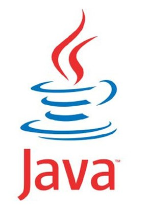

muitas vezes queremos programar na palma da mão,mas qual o melhor app para isso? veja os melhores apps para programação a baixo:
python
o melhor app para python é o pydroid,sendo muito facil baixar as bibliotecas,tendo espaços automáticos,visual simples,entre outras mecânicas excelentes,mas vale ressaltar que ele contém compras no app e mecânicas exclusivas para assinantes;
você tambem pode usar o qpython tendo muitos pros e nem uma compra no app sendo o segundo melhor ide de python da lista;
html,css e javascript
com certeza o melhor app para desenvolvimento web é o TrebEdit tendo visual bonito e minimalista, completando automaticamente as tags/>, atalhos para algumas tags/> entre outros pros, dois contras desse app é a baixa otimização e partes exclusivas para compradores.
java
java N-ide é uma ide java e xml com interface bonita e simples com atalhos para comandos,contendo as principais mecânicas para criação de um projeto e design unico, sendo quase perfeito pecando apenas na parte xml não tendo como mudar o build.gradle, mas caso você queira usar o build.gradle você pode baixar o app aide.

c++
o melhor app para programação c++ é o app
cxxdroid
, o cxxdroid é um ide básico com atalhos para comandos e forma fácil de importar bibliotecas,tambem contendo conteudo pago.
ruby,shellscript,
java,python,c++, etc
termux,
termux não é um ide mas sim um emulador de terminal linux,mas tendo um basico conhecimento de terminal você pode programar em diversas linguagems como c++, java, python,ruby,shellscript, etc.
um ponto negativo é que no termux você não pode usar a interface gráfica apenas letras.